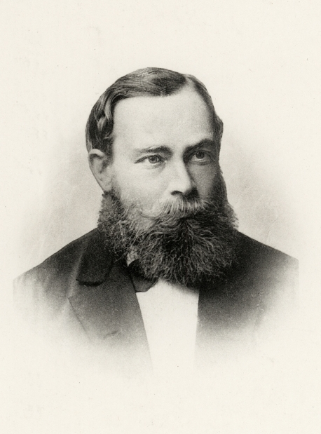

AI CHRONICLE · 01
SCENE 6 · 1854 · 1879 · 사고의 수학화
1854
George Boole · Gottlob Frege생각을 기호로 적다
생각이 수식이 됐습니다.

1854 · BOOLE
『The Laws of Thought』. 참·거짓·AND·OR·NOT만으로 모든 추론을 적을 수 있다고 주장. 100년 뒤 이 0과 1이 트랜지스터에 박힙니다.

1879 · FREGE
『Begriffsschrift』. 한 줄의 자연어 문장을 변항·함수·양화사로 분해. 현대 논리학과 — 수십 년 뒤 — 형식 언어의 출발선.
왜 중요했나
톱니바퀴는 계산은 했지만 생각하는 일은 못 했습니다. Boole과 Frege는 — 생각도 계산으로 바꿀 수 있다는 가능성을 열었습니다. 기계는 아직 없었지만, 그 기계가 쓸 ‘언어’는 미리 준비된 셈입니다.
이 두 책 사이의 25년이 다음 시대의 설계도가 됩니다. ↩ Series LINGUA 09에서 다시 만나는 이름들입니다.
SCENE
Boole — 16세에 학교 교사, 독학으로 수학자가 된 자수성가형.
DETAIL
Frege의 『Begriffsschrift』88쪽. 당대엔 거의 안 읽혔습니다.
ECHO
1937, Shannon: 불리언 대수 = 스위칭 회로. 0과 1이 트랜지스터에 박힙니다.